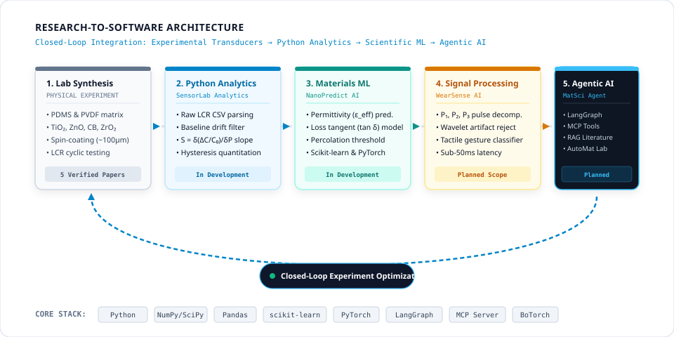

Digital Research & AI-Assisted Scientific Computing
Extending experimental polymer nanocomposites and flexible capacitive sensor research through modern scientific computing, reproducible Python workflows, and practical AI-assisted programming.
Primary Professional Identity • Materials Scientist
Dr. Soly Mathew — Materials Scientist | Flexible Sensor Researcher
Engineering Functional Materials for Intelligent Sensing
Research focused on polymer nanocomposites, flexible capacitive pressure sensors and wearable sensing technologies, with an expanding interest in computational research and AI-assisted scientific workflows. Demonstrating how a materials scientist can use modern AI tools to improve scientific workflows without needing to become a full-time software engineer.
Skill Status & Research Integrity
Transparent Demarcation: Established Expertise vs. Computational Skills in Progress
Maintaining strict scientific integrity is fundamental to academic research. Her established scientific authority is founded on 5 verified first-author peer-reviewed journal papers in international journals (*Smart Materials and Structures*, *Journal of Applied Polymer Science*, *Flexible and Printed Electronics*, *Sensors International*, *IEEE Access*), focusing on flexible capacitive pressure sensors, polymer nanocomposites, and experimental electromechanics.
Her computational and AI-assisted capabilities represent an active, disciplined skills development strategy. No programming experience, AI certifications, completed autonomous software, or benchmark results are fabricated:
Domain-specific SKILL.md configurations, automated pytest suites for sensor data, and literature synthesis workflows with existing MCP integrations and mandatory human verification.
Institutional Relevance
Targeted Danish & European Research Alignment
Her combination of hands-on experimental materials science with modern computational workflows directly addresses high-priority industrial and academic research needs:
Applied Research Institutes
DTI & FORCE Technology
Danish Technological Institute • FORCE Technology: Sensor reliability testing, printed electronics certification, automated calibration scripts, and reproducible documentation for smart surfaces.
MedTech & Wearables
Coloplast & HealthTech R&D
Coloplast & Nordic MedTech: Skin-conformal elastomeric patches, continuous physiological pressure monitoring, automated baseline correction, and reproducible sensor data analysis.
Academic Research Centers
DTU, SDU & Aarhus University
DTU, SDU & AU: Functional polymer dielectrics, experimental sensor electromechanics, reproducible Jupyter research notebooks, and AI-assisted scientific programming.
Workflow Architecture
Scientific Computing & AI-Assisted Research Workflow
A practical pipeline linking hands-on wet-lab sensor testing to Python analysis scripts, AI-assisted code refinement, and verified reproducible research records:

Figure 1. The Scientific Computing Workflow: Experimental sensor testing and cyclic compression data flow into automated Python data pipelines, using AI coding assistants (Claude Code, GitHub Copilot, Google Antigravity) with custom SKILL.md guidelines to produce reproducible Jupyter notebooks and publication-quality figures under human scientific oversight.
Capability Areas
Six Core Areas of Digital Research, Materials Science ML & Computing
Practical technical capabilities developed to enhance scientific research productivity, materials machine learning, and laboratory reproducibility.
A
Python & Scientific Computing
Data Ingestion • Parameter Extraction • Reproducible Notebooks
Technologies & Libraries:
Python 3, JupyterLab / Jupyter Notebook, NumPy, Pandas, SciPy, Matplotlib, basic statistical analysis and data visualization tools.
Scientific Applications:
Processing experimental sensor measurements directly from raw instrument outputs.
Analyzing capacitance–pressure response curves across low-pressure and extended regimes.
Calculating sensitivity slopes (S = δ(ΔC/C0)/δP) with automated regression.
Laboratory Research Outcomes:
Evaluating dynamic hysteresis loops and calculating response/relaxation times (τr, τd).
Comparing experimental datasets across varying filler concentrations (TiO₂, ZnO, CB).
Creating self-contained, reproducible Jupyter notebooks for transparent lab archives.
Generating publication-quality Matplotlib plots with standardized error bars and typography.
Python 3JupyterLabNumPyPandasSciPyMatplotlib
B
Machine Learning for Materials Science & Informatics
Learning to configure AI coding environments for materials science using standardized instruction files: CLAUDE.md, GitHub Copilot custom instructions, AGENTS.md, and SKILL.md.
Important Distinction: These are reusable, structured instructions for existing AI assistants, not standalone or autonomous AI agents.
Example Research Skills:
sensor-data-analysis: Analyses flexible pressure-sensor measurements and produces reproducible Python results following lab guidelines.
scientific-literature-review: Assists with structured literature analysis, DOI verification, and evidence-backed comparisons.
scientific-report-writing: Assists with experimental reports, scientific documentation, error bar consistency, and reproducibility.
SKILL.mdCLAUDE.mdCopilot RulesValidation Rules
E
Existing MCP Tools & Research Integrations
Model Context Protocol • Tool Permissions • Data Governance
Available Tool Integrations:
Utilizing existing, officially supported Model Context Protocol (MCP) servers and research integrations to securely connect coding environments with external tools:
GitHub integrations for version control and issue tracking.
Local filesystem tools for structured CSV data access.
Research literature tools and reference-management integrations where supported.
Practical Learning Focus:
Understanding what MCP is and how it enables standardized tool interaction.
Configuring existing, pre-built MCP servers without building custom server software.
Auditing tool permissions and validating returned information.
Protecting proprietary and unpublished experimental research data.
Extracting reported sensor performance (sensitivity, working range, hysteresis, response times).
Verifying all DOI references and citations directly against original publisher sources.
Identifying documented research gaps and formulating new experimental questions.
Strict Verification Mandate: All scientific claims, numbers, and citations must be verified against original peer-reviewed papers before inclusion.
Literature ReviewDOI VerificationMetric ExtractionHuman Verification
Instruction Architecture
Research-Specific AI Instructions & SKILL.md Workflows
How reusable domain instructions configure AI coding assistants with existing tools while maintaining mandatory human oversight:
Figure 2. Research Instruction Architecture: Domain-specific guidelines (SKILL.md, CLAUDE.md) provide structured context to modern AI coding assistants (Claude Code, GitHub Copilot, Google Antigravity). Standard MCP integrations connect to files and DOI lookup tools, with all code and outputs subjected to mandatory human scientist review.
Project Portfolio
Three Practical Research Projects
Practical, achievable digital research workflows directly grounded in Dr. Soly Mathew's published sensor experimental data.
In Development
Scientific Python
SensorLab Analytics
Reproducible Data Analysis Workflow for Flexible Capacitive Pressure Sensors
GitHub (In Development)
A reproducible scientific data-analysis and predictive workflow for flexible capacitive pressure sensors. Automates the ingestion of raw LCR meter experimental CSV files, extraction of capacitance–pressure curves, sensitivity slope calculation (S = δ(ΔC/C0)/δP), Materials Science machine learning (Scikit-learn regression models for predicting sensor response from nanofiller loading), hysteresis evaluation, response/recovery time kinetics (τr, τd), and generation of publication-quality plots.
A research workflow demonstrating how modern AI coding assistants (Claude Code, GitHub Copilot, and Google Antigravity) can support scientific Python development for sensor researchers. Focuses on prompt engineering for materials science, custom instruction files, automated test generation, and strict human review of generated code.
Development Pipeline:
Research Hypothesis → AI-Assisted Script Scaffolding → Scientific Code Review & Inspection → Domain Validation Rules (SKILL.md) → Automated pytest Generation → Git Version Control.
Potential Features:
AI-assisted notebook creation and script generation for sensor electromechanics.
Reusable scientific instructions and prompt templates for materials calculations.
Evidence-Backed Literature Synthesis & Structured Metric Extraction
Planned Workflow
An AI-assisted scientific literature review workflow utilizing existing research services and tools to streamline paper discovery, DOI-based verification, and structured extraction of reported sensor performance metrics (permittivity, sensitivity, linearity, hysteresis) with mandatory source verification. Does not require custom agent development.
Literature Review Workflow:
Scholarly Literature Lookup (Crossref / OpenAlex) → PDF Metadata Parsing → Structured Property Extraction Table → Mandatory DOI Attribution Verification → Reference Management Organization (Zotero / BibTeX).
Potential Capabilities:
DOI-based scholarly lookup and citation metadata extraction.
Structured paper comparison across polymer matrix formulations (PDMS, PVDF, PU).
Extraction of reported nanofiller fractions (TiO₂, ZnO, CB) and sensitivity metrics.
Identification of materials processing conditions (sonication time, curing temperatures).
Evidence Verification & Boundaries:
Evidence verification directly against original published manuscripts (eliminates hallucinations).
Drafting transparent research summaries with explicit human verification.
Zotero-based reference organization and BibTeX key synchronization.
Uses existing tools and public APIs; avoids custom agent infrastructure claims.